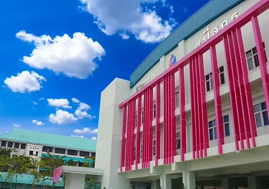

S.K.T. is one of 11 campuses of Suankularb Wittayalai School. The school land was donated by Ms. Panada Suwannanon in honor of the late King Rama IX. Her father, Mr. Plung Suwannanon was once an alumnus of Suankularb Wittayalai School. The current principal of Suankularb Wittayalai Thonburi School is Mr. Phisanu Sripon.


The aim of S.K.T. is to provide a first-class leader in the future that brings the educational values based on the innovative national or international curriculums that were integrated with multiple intelligence theory. Since the very first day of school until now, our school has been supported by the government and developed continuously. We have modern classrooms and laboratories to enhance the skills of our students such as Physics Lab, Chemistry Lab, Biology Lab, iMac computer, cooking labs and many more. Moreover, we have other learning resources that will support the ability of our students. We have the SKT edutainment which is mixed educational technology and game so the student can play and learn at the same time. SKT edutainment comes from 2 words, Education and Entertainment.
SKT offers special programs like English Program and Mini English Program which aims to encourage young generations to be able to communicate in English and to be outstanding at an international level. Mini English program study about the fundamental courses in English while English Program studies the fundamental and additional courses in English except the course related to Thai culture like physical education, health education, and Thai language. The students in English Program will join English camp before the end of semester 2 in Mathayom 1 and 2 and Guide dance camp from Mathayom 3 to Mathayom 6. Furthermore, the students will have the opportunity to participate in any academic competition in English Program School networks like crossword puzzle, storytelling, debate, spelling bee and international conference which will help the student to have a network of friends using English language.
SKT also supports every student to have experience by joining Language and Cultural exchange program in USA, Singapore, New Zealand, The Philippine and China. We strive to have a tremendous reputation for excellence, with an emphasis on exceptional teaching, academic achievement, service to teamwork and leadership. We also aim to care for our students, and to educate them in accordance with core values to bring out the best in every one of them preparing to take the next step in their lives with confidence, perspicacious and assertiveness.
Suankularb Wittayalai Thonburi School – International Programme was established in 2018 under the policy of the Thai Ministry of Education to promote Thailand as an Education Hub of this region by offering fully recognized international standard education in an open community of learning.
© Copyright 2019 by SKTIP
Designed by web admin
Tel: +66-99-169-2442
Email: international-programme@sk-thonburi.ac.th
2F 9th Yr. Anniversary Building
201 Kanjanapisek Rd., Thakham
Bangkhuntian, Bangkok 10150